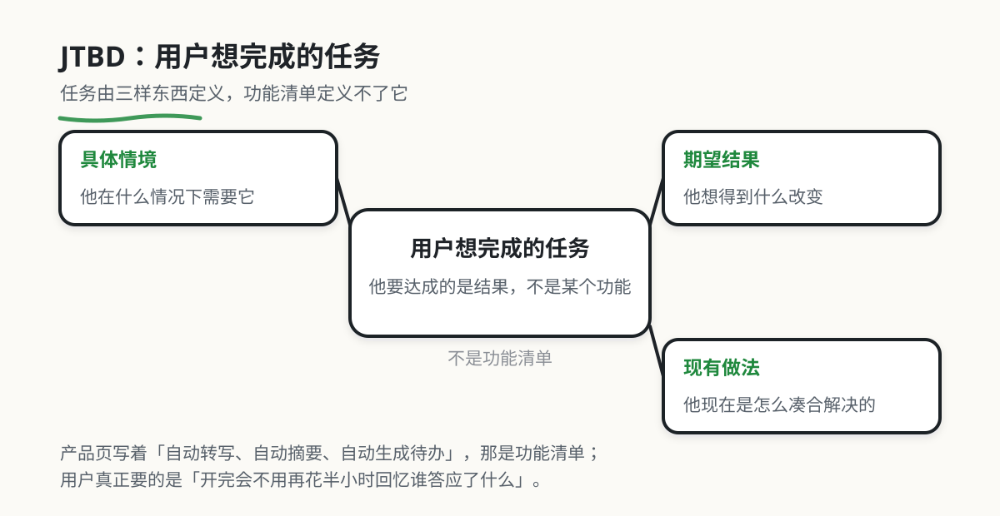

3. 看懂真实需求（JTBD）
本章目录 · 1 节
Jobs to Be Done 需求理论

假设我们准备做一个会议纪要工具。从功能出发，很容易列出转写、摘要、待办提取和文档导出。但这些功能并不能回答一个更基本的问题：用户为什么要在会议结束后使用它？
Jobs to Be Done（JTBD）用“用户想完成的任务”来回答这个问题。它关心具体情境、期望的结果和现有做法，而不是先假定某个功能必然有用。
本章先介绍 JTBD 的基本概念，再说明如何把功能描述改写为可验证的需求假设。
看图后试一次：把“给会议工具加一个导出按钮”改写成一条任务描述，写明谁在什么情境下，希望得到什么结果。再补两个问题：他上次怎么完成这件事，新的结果怎样才算可用。示例：“项目负责人在会后，希望把责任人已确认的任务发给团队，减少逐个追问。”这仍是待访谈验证的假设。
1. 从功能转向任务
Jobs to Be Done 常简写为 JTBD。它把产品看作用户用来完成某项任务的工具。
这里的“事”，不是待办清单里那种表面动作，而是用户希望自己状态发生的一种 进展 。比如：
- 不是“我要一个 AI 纪要工具”，而是“我想在会后 10 分钟内把重点、待办和责任人整理清楚，别再靠回忆补笔记”
- 不是“我要一个记账 App”，而是“我想知道钱到底花去哪了，好让我月底别再焦虑”
- 不是“我要一个简历优化器”，而是“我想更有把握地投出一份像样的简历，不想每次投递都怀疑自己写得太差”
因此，JTBD 区分了产品的实现方式和用户需要完成的任务。
这也是为什么很多看似不同的产品，实际上在竞争同一个 job。用户想“在上班路上不那么无聊”，可雇用的对象可能是短视频、播客、游戏、聊天，甚至打瞌睡。用户想“快速搞懂一份很长的 PDF”，可雇用的对象可能是 AI 摘要工具、实习生、同事、自己硬着头皮看，或者干脆先不看。
因而，一个产品的竞争对手不一定是同类应用，也包括用户已经在采用的其他做法。

2. 与用户画像和功能列表的区别
很多新手刚开始做需求分析时，会先写用户画像：25 岁，女生，一线城市，白领，喜欢效率工具，愿意尝试新产品。这样的信息不能说完全没用，但它通常 不够解释一个人为什么会在此刻采取行动。
JTBD 更关心的是下面这些问题：
- 他是在什么场景下决定找解决方案的
- 当时到底卡住了什么
- 他想把什么事情推进到下一步
- 现在正在用什么笨办法撑着
- 如果事情解决得好，什么结果会让他觉得“值了”
也就是说，用户画像更像“这个人大概是谁”，JTBD 更像“这个人现在到底想完成什么”。
同样地，功能列表也容易把人带偏。用户说“我想要导出 Word”“我想要 AI 改写”“我想要语音输入”，这些都只是表层表达。JTBD 会继续往下追问：
- 为什么你现在需要导出 Word，而不是 PDF？
- 你想改写，是因为文风太差，还是因为需要适配不同对象？
- 你想语音输入，是因为懒得打字，还是因为你经常在走路、开车、开会后马上记录？
很多时候，功能只是 job 的一种临时翻译 。如果你只收集功能，很容易把产品做成“用户说什么就堆什么”；如果你能看见背后的 job，才更有机会做出真正顺手、真正有竞争力的方案。
3. 例子：会议纪要
假设我们准备开发一个会议纪要工具。如果从功能开始，可以列出：
- 要不要支持上传音频
- 要不要接入说话人分离
- 要不要导出 Markdown
- 要不要自动生成待办
这些都是可能的实现方式。但是，用户任务可能是：
- 我想在会后 10 分钟内，把讨论结果同步给没参会的人
- 我想把待办、责任人和截止时间提干净，别让团队靠记忆协作
- 我想减少重复整理会议内容的时间，把精力留给决策和推进
由此可以判断，第一版的重点可能不是“支持 12 种导出格式”，而是：
- 纪要结构要足够清楚
- 待办提取要稳定
- 分享链接要方便
- 输出结果要让人敢直接转发给团队
产品功能的取舍因此可以回到用户任务上进行。

下面的对照给出了三个场景。切换场景时，注意“产品功能”和“用户任务”分别描述了什么。
4. JTBD 的五个要素
JTBD 描述通常包含五个要素：场景、触发、期望的进展、当前替代方案和成功标准。
4.1 场景
用户是在什么时刻、什么环境里想起这个产品的？
- 是开完会以后
- 是老板临时要材料的时候
- 是晚上准备投简历的时候
- 是月底发现钱又不够花的时候
没有场景的需求，通常都还不够真实。
4.2 触发
是什么让他决定立刻找解决方案？
- 被长文档压住，不知道从哪开始看
- 明天要交材料，今天才发现格式乱七八糟
- 刚被领导追问进度，意识到自己没有整理清楚
- 想坚持记录，但手写、复制、整理都太麻烦
触发点往往带着情绪。这个情绪很重要，因为它决定了用户为什么会在这一刻产生行动。
4.3 想完成的进展
他不只是想“做个动作”，而是想把自己推进到什么新状态？
- 从混乱到清楚
- 从焦虑到安心
- 从拖延到启动
- 从低效到顺手
- 从说不明白到能直接交付
这一步里，“进展”这个词非常关键。因为很多人真正买的不是工具，而是 状态变化 。
4.4 当前替代方案
现在没有你的产品时，他怎么做？
- 手工复制粘贴
- 用 Excel 或备忘录硬撑
- 找同事帮忙
- 拖着不做
- 在几个工具之间来回切
谁是替代方案，谁就是你的真实竞争环境。

4.5 成功标准
事情怎样才算真的被解决？
- 10 分钟内得到可分享的结果
- 不需要二次大改就能发给别人
- 不容易漏项、出错、忘事
- 第一次用就知道下一步怎么走
如果你连“用户怎么判断值不值”都说不清，那这个方向大概率还没有收敛好。
5. JTBD 句式
当你想梳理一个产品方向时，可以先套这个非常实用的句式：
当 __________ 的时候，我想要 __________，以便于 __________。
现在我只能通过 __________ 来勉强完成这件事。
比如：
当我开完一场信息量很大的项目会时，我想要快速得到一份带待办、责任人和截止时间的纪要，以便于我能马上同步团队并推进执行。
现在我只能靠自己回忆、翻聊天记录和手工整理来勉强完成这件事。
再比如：
当我准备投递一个新岗位时，我想要快速把已有经历改写成更贴合岗位的版本，以便于我能更有把握地投出一份像样的简历。
现在我只能反复复制旧简历、手改措辞，改到最后越来越不确定。
如果你能把一句话写到这种清晰程度，后面的页面设计、提示词设计、功能优先级判断，都会容易很多。
6. 做 AI 产品时，特别要看的三层 job
很多 AI 产品在功能演示时看上去很强，但真正上线之后却留不住人，常见原因是只解决了表层动作，没有解决更深的 job。
你可以把一个 job 粗略分成三层来看：
6.1 功能层
最表面的任务是什么？
- 总结文档
- 改写文案
- 提取待办
- 生成图片
这是用户嘴上最容易说出来的一层。
6.2 情绪层
用户希望减少什么不舒服，或者获得什么感受？
- 不想那么慌
- 不想显得不专业
- 不想每次都从零开始
- 想更有掌控感
很多付费意愿，实际上和情绪层关系很大。
6.3 社会层
用户希望在别人眼里变成什么样？
- 看起来更靠谱
- 在团队里更有组织能力
- 在客户面前更专业
- 在社交平台上更会表达
如果你只做功能层，产品很容易被替代；如果你同时理解了情绪层和社会层，你就更容易找到真正有黏性的价值。
7. 用 JTBD 反过来筛产品方向
有时候不是你已经有产品，而是你手里有 3 到 5 个点子，不知道做哪个。这时 JTBD 很适合拿来做筛选。
你可以拿着每个点子，分别问自己 5 个问题：
- 这个点子对应的场景是不是足够具体？
- 用户现在是否已经在用某种笨办法解决？
- 这个 job 的痛感是否足够强，或者足够高频？
- 如果我做好了，用户会不会明显感受到“状态变好了”？
- 第一版能不能只围绕这个 job 的关键一步，做一个很小但有用的版本？
如果一个方向讲到最后还是只能说“感觉挺有意思”，却说不清触发、替代方案和成功标准，那它大概率还只是一个模糊灵感，不是一个成熟方向。
8. 可以直接拿去访谈用户的问题
很多人一做调研就问：“你想要什么功能？”这种问法很容易得到表面答案。
JTBD 更适合问下面这些问题：
- 最近一次你遇到这个问题是什么时候？
- 当时你在做什么，为什么会卡住？
- 你最后是怎么解决的？
- 这个过程里最烦、最慢、最不放心的地方是什么？
- 如果有一个工具能帮你，什么结果会让你觉得真的有用？
- 你试过哪些替代方法？为什么它们不够好？
这种问法有个好处：它会把对话拉回真实经历，而不是停留在想象中的偏好。

9. 用 AI 帮你做 JTBD 拆解
JTBD 本身不是 AI 发明的，但 AI 很适合帮你整理和提炼 JTBD。
比如你已经收集了 5 到 10 条用户反馈，就可以把它们丢给模型，让它按以下结构总结：
请你扮演产品研究助手。
我会给你一些用户原话，请你不要先给功能建议，
而是先按 Jobs to Be Done 的框架整理：
1. 用户处在什么场景
2. 触发他采取行动的事件是什么
3. 他真正想完成的进展是什么
4. 当前替代方案是什么
5. 他最在意的成功标准是什么
6. 这些反馈里反复出现的情绪词有哪些
最后，请把这些内容整理成 3 个最值得优先验证的 JTBD 假设。
如果你已经有一个点子，也可以让 AI 帮你做第一轮收敛：
我想做一个 [你的产品想法]。
请不要直接给我功能列表，而是用 Jobs to Be Done 方法帮我分析：
1. 这个产品可能服务哪些具体场景
2. 每个场景中用户想完成的核心 job 是什么
3. 现有替代方案有哪些
4. 哪个 job 最适合作为 MVP 的起点，为什么
5. 请把最终推荐的 job 写成一句清晰的 JTBD 句子
这样做的好处是，你不会一上来就被 AI 带去“脑暴 50 个功能”，而是先把方向讲清楚。
10. 新手最常见的 4 个误区
10.1 把 job 写成功能名
“AI 总结”“智能分类”“自动生成”都不是 job，它们只是可能的实现方式。
10.2 把人群写得很宽
“所有职场人”“所有学生”“所有创业者”通常都太泛。越泛，你越难看见真实场景。
10.3 只听用户说，不看用户怎么做
用户会描述自己想要什么，但他真正的优先级，常常藏在他现在如何凑合解决问题里。
10.4 一开始就想做完整平台
JTBD 不要求一开始就覆盖完整流程。通常应先选择一个具体场景，并确定其中优先验证的一步。
11. 使用 AI 整理 JTBD 材料
JTBD 不是 AI 发明的，但 AI 很适合在这套方法里当你的研究助手、整理助手和对照助手。关键是：让 AI 帮你整理和扩展，而不是替你臆测用户。
你可以这样用：
12.1 让 AI 帮你把模糊点子改写成 JTBD 假设
当你脑子里只有一句模糊描述，比如“我想做一个帮大学生找实习的工具”，可以先让 AI 帮你把它拆成几种可能的 job：
我现在有一个模糊产品点子：[你的点子]
请不要直接给我功能列表，而是用 Jobs to Be Done 的方式帮我分析：
1. 可能对应哪些具体场景
2. 每个场景里用户真正想完成的进展是什么
3. 当前替代方案可能是什么
4. 哪个 job 最适合先做 MVP
请最后把每个 job 写成一句清晰的 JTBD 句子。
你甚至可以把输入写得很小白：
我想做一个帮大学生找实习的东西。
我现在也说不清具体是做什么，你帮我想想用户到底想完成什么事。
AI 可能给出的有用输出会像这样：
可能的 JTBD 方向：
1. 当我第一次准备投实习时，我想快速知道应该先准备哪些材料，
以便我不要因为信息混乱一直拖着不投。
2. 当我看到一个实习岗位时，我想快速判断自己是否值得投，
以便我不要在不合适的岗位上浪费太多时间。
3. 当我开始投递时，我想把现有简历改成更贴合岗位的版本，
以便我能更快完成投递并提高通过率。
这种输出的价值在于，它会把你原本一句很泛的想法，拆成几个更接近真实场景的方向。
12.2 让 AI 帮你整理访谈原话
如果你已经做了几次用户访谈，可以把访谈记录交给 AI，让它帮你提炼反复出现的场景、触发点、替代方案和成功标准。
下面是 5 位用户的访谈原话。
请不要先给解决方案，而是按 JTBD 框架整理：
1. 用户处在什么场景
2. 触发他采取行动的事件是什么
3. 他真正想完成的进展是什么
4. 当前替代方案是什么
5. 他最在意的成功标准是什么
6. 哪些信息在多位用户中重复出现
最后整理成 3 条最值得优先验证的 JTBD 假设。
一个很简单的小白输入也可以这样写：
我问了 3 个人，他们大概是这样说的：
1. 每次要投实习我都得重新改简历，特别烦。
2. 我其实最怕的是不知道自己写得对不对。
3. 我现在会先找学长学姐帮我看，但每次都不好意思总麻烦别人。
你帮我整理一下，他们真正想完成的事情是什么。
AI 可能输出：
整理结果：
- 共同场景：准备投递实习前，需要处理简历
- 共同困难：不知道如何修改到“够好”
- 当前替代方案：找学长学姐帮看，自己反复修改
- 可能的 JTBD：
当我准备投递实习时，我想更快判断简历是否已经达到可投递水平，
以便我不要一直卡在“再改一改”而迟迟投不出去。
这种输出很有用，因为它帮你从零散原话里提炼出更像“需求”的东西。
12.3 让 AI 帮你做一轮轻量级网络调研
在你还没开始大规模访谈前，可以先让 AI 帮你做一些很轻的外部信息扫描，比如：
- 公开论坛或社区里，大家是怎么抱怨这个问题的
- 市面上已有产品主要在解决哪一层问题
- 用户最常见的替代方案是什么
- 常见评价里，大家最满意和最不满意的点是什么
这种调研不能代替真实用户访谈，但很适合作为 Discover 阶段的热身，帮你先建立问题地图。
一个简单输入可以是：
请你帮我查一查：
“大学生改简历、投实习时最常见的痛点是什么？”
优先看公开论坛、经验帖、求职社区里大家自己说的话。
帮我整理成 5 条最常见问题。
AI 可能输出：
常见痛点整理：
1. 不知道简历该写什么，经历太少
2. 不知道怎么针对不同岗位修改
3. 改了很多版，但始终不确定是否够好
4. 找不到可靠的人帮忙看
5. 投递流程复杂，容易拖延
这类输出不能当最终结论，但很适合帮你先决定要优先访谈哪类问题。
12.4 让 AI 充当“反方”
很多时候，我们会对自己的想法太有感情。你可以专门让 AI 扮演一个挑刺的人，逼你把问题说得更清楚：
请你扮演一个非常严格的产品研究顾问。
下面是我的 JTBD 假设：[你的假设]
请从以下角度批判它：
1. 这个场景是否过宽
2. 这个 job 是否写成了功能而不是真正进展
3. 替代方案是否太弱
4. 成功标准是否不够清楚
5. 这个假设最需要被验证的风险是什么
这样做的好处是，你能更快发现自己是在看需求，还是只是在看自己喜欢的方案。
12. 小结
- JTBD 将分析对象从产品功能转向用户想完成的任务。
- 一条 JTBD 假设应说明场景、触发、期望进展、当前替代方案和成功标准。
- 产品功能是完成任务的一种方案，不应与用户任务混为一谈。
- JTBD 是需求假设，还需要通过用户访谈和行为证据检查。
13. 练习
- 选一个产品点子，写下用户在什么情况下会需要它。
- 写清用户想得到的结果，以及他现在使用什么办法代替。
- 找一位可能遇到这个问题的人，问问他最近一次真实经历。
- 根据对方的原话，改写你最开始的 JTBD 描述。
最后得到一句普通人能读懂的话就够了，不需要为了套公式把句子写得很复杂。
延伸阅读
- Christensen Institute: Jobs to Be Done
- Harvard Business School Online: What Is Jobs to Be Done?
- Intercom: Jobs-to-be-Done: A framework for customer needs
- Mural: Jobs to Be Done framework guide